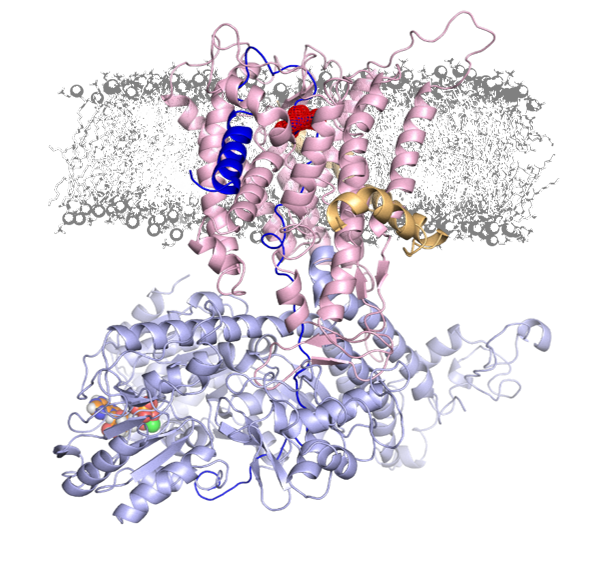
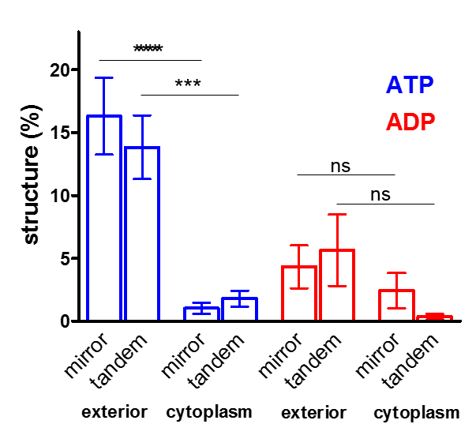
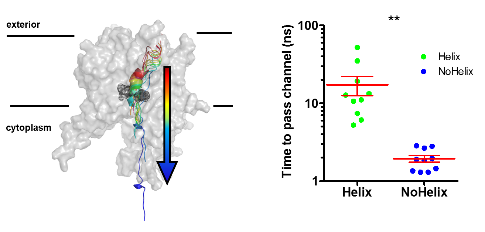

The bulk of protein secretion is conducted by the ubiquitous Sec translocon, which also acts as the principle route for the insertion of membrane proteins. In bacteria, the translocon comprises SecY, SecE and usually SecG, with the protein-conducting pore through the centre of SecY. This complex can associate with either the ribosome for co-translational protein translocation – the main pathway for nascent membrane protein insertion – or with the motor protein SecA for post-translational secretion. In the latter case the fully synthesised protein is maintained in an unfolded conformation by chaperones, such as SecB, and SecA itself. The protein must then fold during or after the translocation processs
There are two main areas of which I am interested in Sec-mediated transport:
ATP-dependent confortmational changes in Sec
In prokaryotes, the drive for translocation comes from ATP hydrolysis by SecA, in concert with the proton motive force (PMF). We used all-atom molecular dynamics (MD) simulations with single molecule FRET and biochemical assays to analyse this process. We show that ATP binding by SecA causes opening of the SecY-channel at long range, as below

In addition, we see that substrates at the SecY-channel entrance feed back to regulate nucleotide exchange by SecA.

This two-way communication suggests a new, unifying 'Brownian ratchet' mechanism, whereby ATP binding and hydrolysis bias the direction of polypeptide diffusion. The model represents a solution to the problem of transporting inherently variable substrates such as polypeptides, and may underlie mechanisms of other motors that translocate proteins and nucleic acids.
In our proposed model (below)) the direction of random substrate diffusion is biased by the action of the ATPase. In the absence of blockages, the polypeptide diffuses freely backwards and forwards through the closed (ADP-bound) channel (state (i) in Figure 8). When a region of polypeptide that cannot pass through reaches the channel entrance (state (ii) – block region as green circle), it triggers nucleotide exchange – probably via the 2HF (state (iii)). This causes a brief opening of the channel (iv), allowing the polypeptide to diffuse freely, before ATP is hydrolysed and the channel closes ((ii) or (v) depending on the position of the block). Back-diffusion is restricted because bulky regions on the periplasmic side do not trigger nucleotide exchange (vi): the whole scheme therefore acts as a ratchet promoting translocation. In essence, the bias for forward directionality arises because the energy transducing (ATP dependent) step – which resolves channel blockages – happens at the cytosolic, but not the periplasmic, surface.

Read more about this study in our paper in eLife or in our < ARCHER case study.
ATP-driven pre-protein secondary structure
To extend the model above, we set about to understand the nature of the unfolded pre-protein during the translocation process. Atomic models were built based on a recent pre-protein-containing crystal structure , remodelled into a physiological system. Molecular dynamics (MD) simulation data reveal localised secondary structure formation in the pre-protein, within the SecY cavities.

In the ATP-bound state, the degree of secondary structure is asymmetric between the cytoplasmic and exterior cavities. Regions of structure will be difficult to pass through the tightly-sealed translocon, making an asymmetry a potentially strong biaser of pre-protein diffusion. This asymmetry is not observed in the ADP-bound state, suggesting that pre-protein transport is, in part, driven by ATP-dependent secondary structure formation.

We have used this to develop an extended model of pre-protein translocation, shown below. In this model, SecA is shown in light blue, SecYEG in red, the SecY central cavity in orange and the pre-protein in dark blue. The direction of pre-protein diffusion is shown with a coloured arrow (green = forwards, red = backwards and orange = either). The starting state (in the dashed box) represents the ADP-bound complex with no pre-protein secondary structure. In this state, the pre-protein is free to diffuse freely backwards and forwards, so no net translocation occurs. Then, localised pre-protein secondary structure formation can occur in either the exterior or cytoplasmic cavity; structure in the exterior cavity favours forward – productive – diffusion (top left panel), whereas structure in the cytoplasmic cavity would favour backward diffusion (bottom left panel). We previously demonstrated that bulky pre-protein in the cytoplasmic cavity triggers nucleotide exchange, resulting in the bottom right state, where ATP is bound and the cytoplasmic cavity has widened. As shown above, this state strongly disfavours secondary structure in the cytoplasmic cavity, driving the complex towards the middle right panel. Here, either ATP is immediately hydrolysed, to return to the original state, or secondary structure forms in the exterior cavity (as per the top right panel), resulting in a forward diffusion of pre-protein. In this way, ATP is acting to prevent the backward diffusion of pre-protein in the complex, by shifting the equilibrium towards the top states (yellow arrow).

This work is currently on bioRxiv, and will shortly be submitted for peer review. Click any of the Sec image above to link directly to the current version